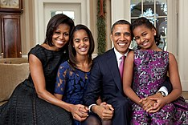

About Michelle Obama
Michelle LaVaughn Robinson was born on January 17, 1964, in Chicago, Illinois, to Fraser Robinson III (1935–1991), a city water plant employee and Democratic precinct captain, and Marian Shields Robinson (b. July 30, 1937), a secretary at Spiegel's catalog store. Her mother was a full-time homemaker until Michelle entered high school. The Robinson and Shields families trace their roots to pre-Civil War African Americans in the American South. On her father's side, she is descended from the Gullah people of South Carolina's Lowcountry region.[8] Her paternal great-great grandfather, Jim Robinson, was born into slavery in 1850 on Friendfield Plantation, near Georgetown, South Carolina. He became a freedman at age 15 after the war. Some of Obama's paternal family still reside in the Georgetown area. Her grandfather Fraser Robinson, Jr., built his own house in South Carolina. He and his wife LaVaughn (née Johnson) returned to the Lowcountry from Chicago after retirement.
Education and early career
Robinson was inspired to follow her brother to Princeton University, which she entered in 1981. She majored in sociology and minored in African-American studies, graduating cum laude with a Bachelor of Arts in 1985 after completing a 99-page senior thesis titled "Princeton Educated Blacks and the Black Community" under the supervision of Walter Wallace. Robinson recalls that some of her teachers in high school tried to dissuade her from applying, and that she had been warned against "setting my sights too high". She believed her brother's status as an alumnus – he graduated in 1983, before being hired as a basketball coach at Oregon State University and Brown University – may have helped her during the admission process, but she was resolved to demonstrate her own worth. She has said she was overwhelmed during her first year, attributing this to the fact that neither of her parents had graduated from college, and that she had never spent time on a college campus.